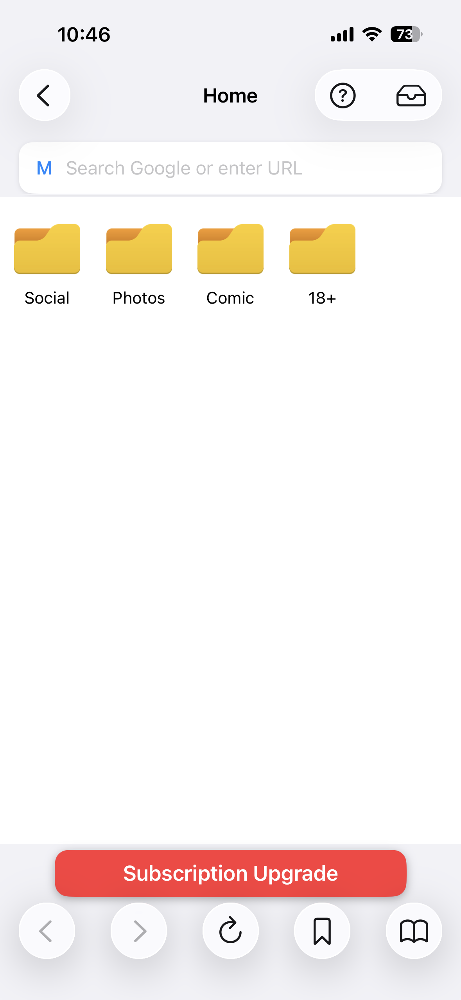
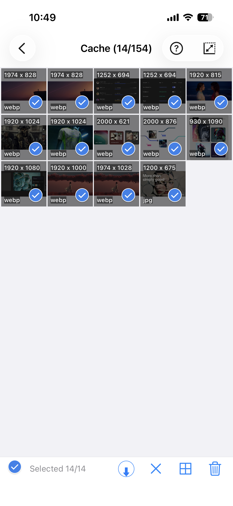
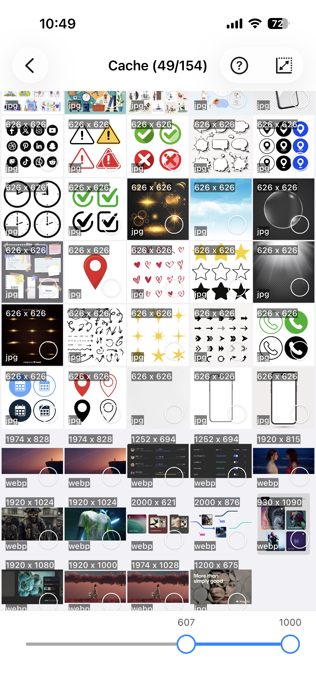

Bilder von Webseiten herunterladen – alle Bilder auf einmal
Bilder aus dem Web zu speichern bedeutete früher, jedes einzelne Bild per Rechtsklick herunterzuladen – oder noch schlimmer: Screenshots zu machen. ImageGet macht das anders: Füge eine beliebige URL ein und hole alle Bilder der Seite mit einem einzigen Tippen. Melde dich bei Instagram an, um Bilder und Reels beim Browsen zu speichern – oder lade von jeder anderen Website herunter, die du magst.
Lade ImageGet kostenlos herunter – jedes Bild und Reel einer Seite mit einem Tippen speichern.
ImageGet herunterladenWarum Stapel-Downloads besser sind als einzelnes Speichern
Wenn eine Seite ein Dutzend Bilder enthält, ist das einzelne Speichern langsam und fehleranfällig. Am Ende fehlen ein paar, oder du erwischt versehentlich niedrig aufgelöste Vorschaubilder. Der Stapel-Download nimmt dir die Arbeit ab: Eine Aktion sammelt alles, und du entscheidest danach, was du behältst.
So funktioniert es in vier Schritten
- Anmelden oder URL kopieren. Melde dich mit deinem Instagram-Konto an oder öffne eine beliebige Seite – eine Fotogalerie, einen Forum-Thread, einen Nachrichtenartikel – und kopiere den Link.
- In ImageGet einfügen. Öffne die App, füge den Link ein und tippe auf Go. ImageGet durchsucht die Seite und sammelt jedes Bild und jedes Reel darauf.

- Bilder ansehen. Alle Bilder erscheinen in einem übersichtlichen Raster. Tippe ein Bild an, um es im Vollbild anzusehen, und zoome per Pinch, bevor du dich entscheidest.
- Alles speichern. Tippe auf Save All, um den ganzen Stapel in einem Durchgang in deine Fotomediathek zu übertragen.

Profi-Tipp: den Kleinkram herausfiltern
Nicht jedes Bild auf einer Seite ist es wert, behalten zu werden. Icons, Profilbilder und winzige Vorschaubilder machen deine Mediathek unübersichtlich. Aktiviere Smart Filtering und lege eine Mindestgröße fest – ImageGet überspringt den kleinen Kram automatisch und behält nur die größeren Bilder, die du wirklich willst.

Profi-Tipp: mehrere Seiten in die Warteschlange stellen
Du arbeitest mehrere Seiten durch? Stelle sie in die Warteschlange und lass ImageGet im Hintergrund arbeiten, während du weiter browst. Du musst nicht warten – deine Bilder sind fertig, wenn du es bist.
FAQ
Wie lade ich alle Bilder einer Webseite auf einmal herunter?
Füge eine URL in ImageGet ein, tippe auf Go, sieh dir das Raster an und tippe dann auf Save All. Alle Bilder der Seite werden in einem Durchgang in deiner Fotomediathek gespeichert.
Kann ich Bilder kostenlos im Stapel herunterladen?
Ja — der kostenlose Tarif umfasst 2 Downloads für Web-Bilder. Mit Premium sind Speichern und Werbefreiheit unbegrenzt.
Funktioniert es mit Instagram und anderen Seiten?
Ja. Melde dich bei Instagram an, um Bilder und Reels zu speichern, oder füge eine URL von einer anderen Website ein, um deren Bilder herunterzuladen.
Sehen. Speichern. Einfach.
Lade ImageGet kostenlos herunter und speichere Bilder und Reels mit einem Tippen.
ImageGet herunterladen